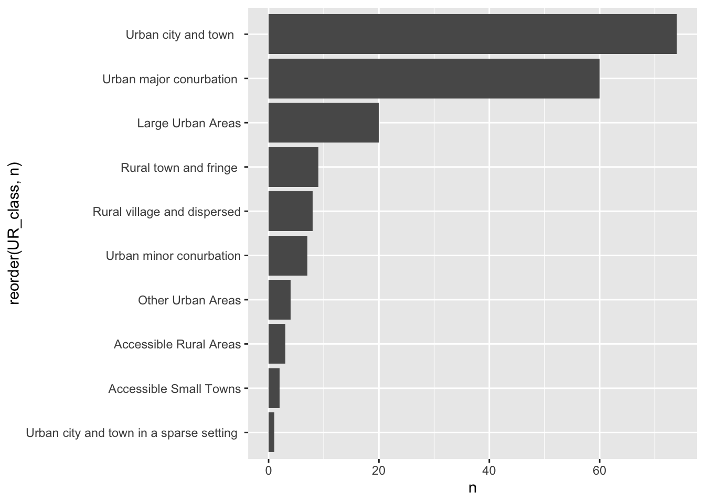

Using tinyForestData
Introduction
tinyForestData is an R package which accompanies the tinyForestR package. It contains datasets which allow exploration of te develpment and biodiversity associated with Tiny Forests in the UK. It currently contains x datasets.
tf_latest_sf_uk
This a simple feaures dataset using EPSG 4326 as coordinate referene systam which contains data on 196 UK Tiny Forests including:
Name and ID
Website
Planting date
Planted area
Mix of trees
Age in days (from planted date to July 1st 2023)
xy coordinates as a
geometryfieldUsing the
sfformat enables easy mapping as well as data manipulation
tf_urban_classification
This includes the ONS (and SCottish equivalent) urban rural classification of the location of each TF.
tf_urban_classification |>
count(UR_class) |>
ggplot(aes(reorder(UR_class, n), n)) +
geom_col() +
coord_flip()
tf_nbn_df_2010
This is a large dataset (> 500000 rows of data) with observations of species within a 1km buffer of each TF since 2010 derived from the National Biodiversity Network API.
tf_nbn_df_2010 |>
group_by(tfId, year) |>
count() |>
ggplot(aes(year, fct_rev(factor(tfId)), fill = n)) +
geom_tile() +
scale_fill_viridis_c(option = "turbo")